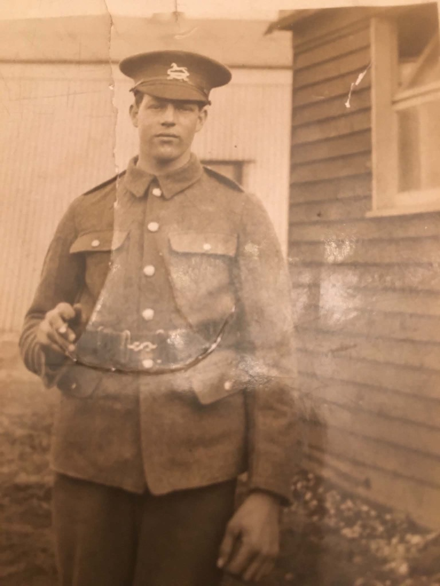

Ernest Harmson
1895–1916 · 10th West Yorkshire Regiment · killed at Fricourt.

Albert Harmson
Ernest's brother. A research thread to be developed independently.

Fricourt, 1 July 1916
The battle, maps, battlefield and the 10th West Yorkshires.